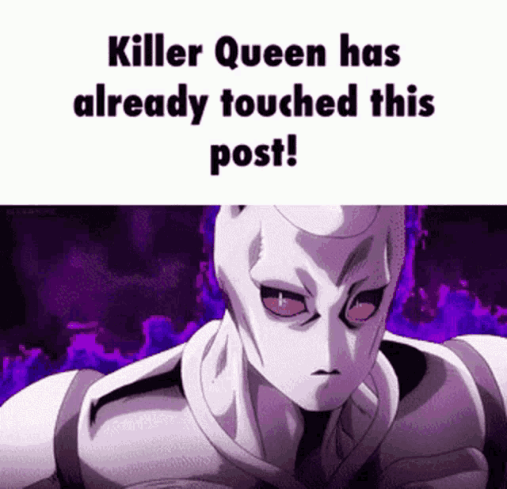

Creating my first website was a challenging but worthwhile experience. Before starting this project, I had only a basic understanding of HTML and CSS, so building a complete webpage from scratch felt intimidating. However, once I began experimenting with simple tags and styles combined with some support from ai, I realized that web development becomes much more do-able One of the most important things I learned during this project was how HTML provides the structure of a webpage while CSS controls the visual design. Understanding this separation helped me stay organized and made the process feel less overwhelming. I also learned how important it is to test my work frequently. Every time I made a small change, I refreshed the page to see the results. This helped me catch mistakes early and understand how each line of code affected the final layout. Another valuable lesson was learning how to link pages together. Adding navigation between the home page and the project page made the website feel more complete and functional. I also practiced writing content for the site, which helped me reflect on my progress and think about how I want to present my work in the future. Overall, this project gave me confidence in my ability to build websites. Even though the design is simple, it represents an important first step in my learning journey. I now feel more prepared to take on future projects and improve my skills as the year continues.
Back to Home